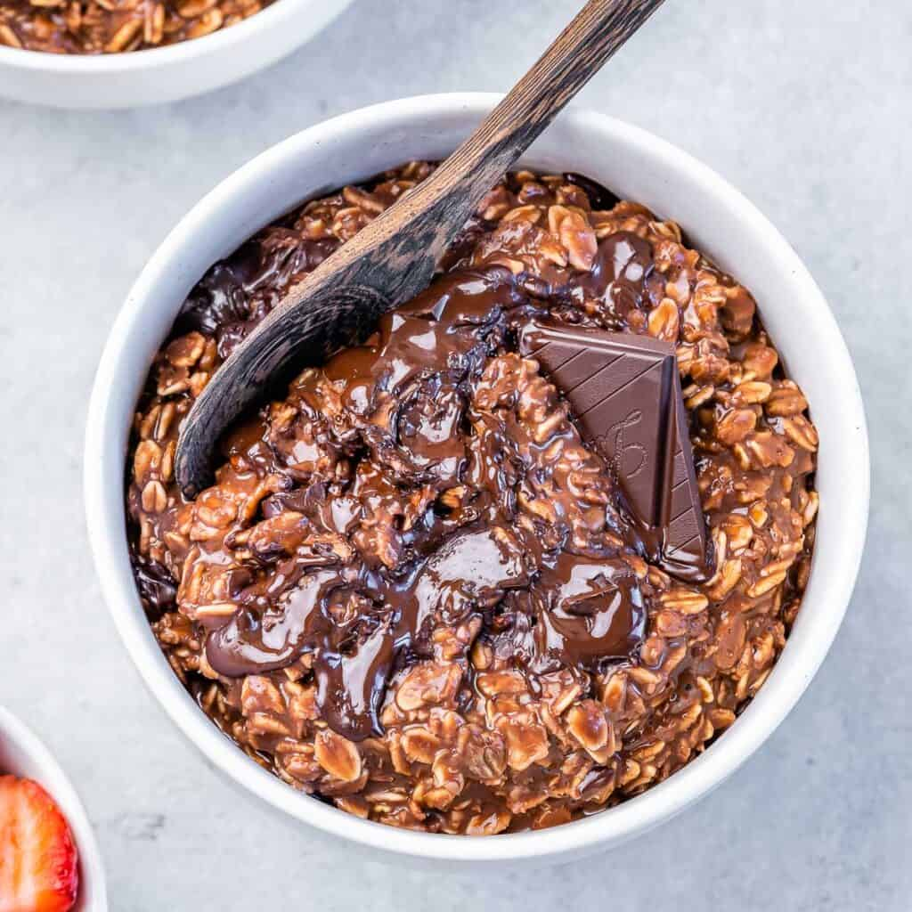

Chocolate Oatmeal Bowl
Description
We are in love with the oatmeal breakfast recipe. It is unbelievably rich and delicious. Made with a handful of simple pantry staple ingredients like rolled oats, cocoa powder, and maple syrup. Cooked with milk as its base, and then topped with some melted chocolate. To give it that last perfect touch, add a few mini marshmallows especially if you want to convince those kids to finish their hot cocoa oatmeal breakfast! We promise that they will love it too!
Ingredients
- Oatmeal
- Cocoa powder
- Milk
- Fine kosher salt
- Vanilla extract
- Maple syrup
- Dark chocolate
Steps
- To a medium saucepan add oats, cocoa, milk, salt and vanilla.
- Place the saucepan over low heat and cook for 12-15 minutes, stirring occasionally.
- Once creamy, remove from heat and stir in the maple syrup.
- Divide among 4 serving bowls and garnish with chopped chocolate while still warm.